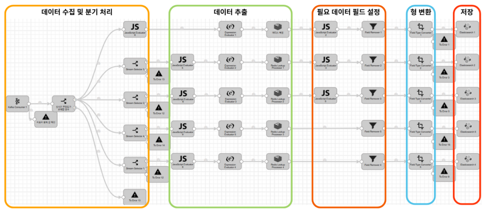
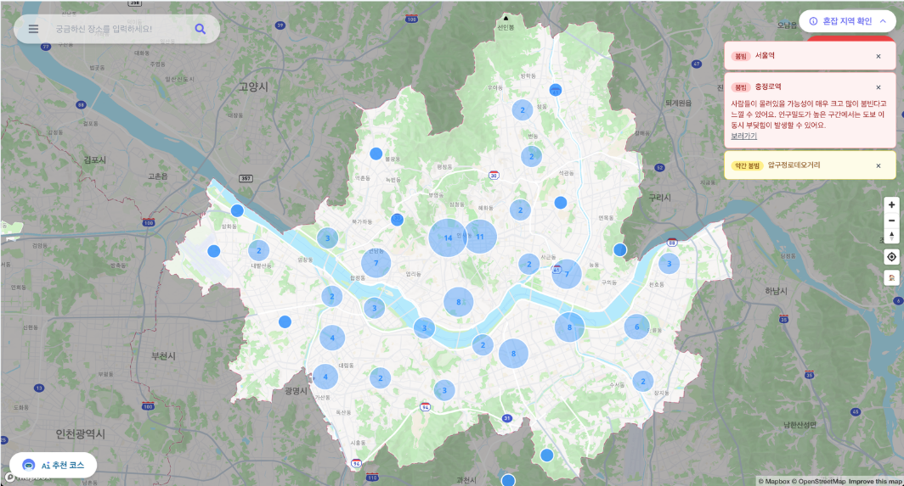
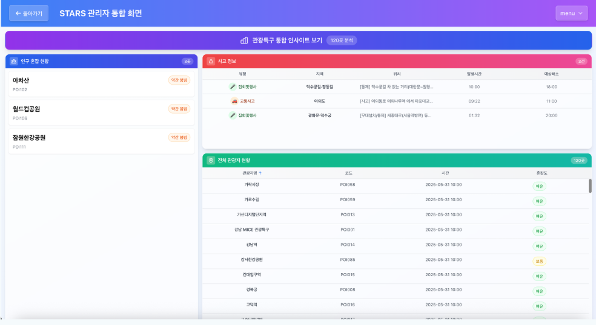
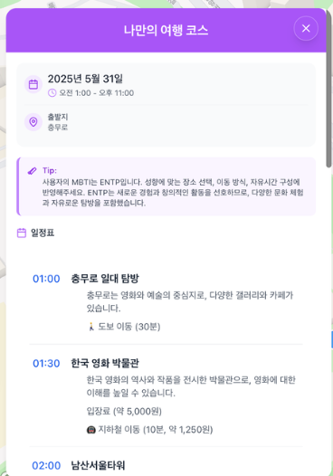

Case Study
BackendMSAReal-time
STARS — 서울 실시간 혼잡도·AI 여행 추천 플랫폼
2025.03.25 – 2025.06.05 (73일) · 팀 12명 (FE 3 · BE 5 · AI 2 · Cloud 2) · 백엔드 + 프론트엔드(챗봇)
서울의 실시간 도시 데이터를 AI 여행 추천으로 연결한 플랫폼입니다.
프로젝트 개요
Problem
서울 관광지는 실시간 혼잡도·주차·날씨 정보가 여러 플랫폼에 흩어져 있어, 사용자가 여행 일정을 효율적으로 계획하기 어려웠습니다.
Solution
Kafka 기반 실시간 데이터 파이프라인과 AI 여행 추천을 결합해, 서울 열린데이터광장의 혼잡도·날씨·주차·관광 데이터를 통합 제공하는 플랫폼을 개발했습니다. Elasticsearch로 검색 성능을 확보했습니다.
- AI 여행 코스 추천
- 실시간 혼잡도 조회
- 주차장 현황 조회
- 날씨 조회
- AI 챗봇
핵심 성과
- ✔ REST API 8개 직접 개발 + SSE 실시간 스트리밍(주차·날씨) 구현
- ✔ SSE 기반 실시간 스트리밍(주차·날씨) 구현
- ✔ JWT + Redis Token Version 인증 구조 설계
시연 영상
아키텍처
- User / Place / ExternalInfo / Congestion 서비스를 MSA로 분리
- Kafka + StreamSets로 실시간 데이터 수집
- Elasticsearch에 색인하여 검색 속도 개선
- Gateway를 통해 API 통합, Redis·PostgreSQL을 역할에 맞게 분리

내가 담당한 부분
User Service — Auth (PostgreSQL·Redis)
Place Service — PostgreSQL
External Info — 주차·날씨 SSE (Elasticsearch)
본인 역할
핵심 기여
- ✔ JWT + Redis Token Version 기반 인증 구조 설계 (로그인·로그아웃·강제 무효화)
- ✔ SSE 기반 실시간 주차 정보 스트리밍 구현 (날씨 스트리밍 공동 개발)
- ✔ Elasticsearch REST 쿼리 직접 연동 (ParkEsService) — RestTemplate 기반 쿼리 작성 및 Aggregation 파싱
- ✔ REST API 8개 개발 (인증 5: 로그인·리프레시·로그아웃·회원가입·프로필, 장소 3: 지역별 통합조회·카페 목록·카페 상세) + 단일 SSE 스트림(/main/stream)에 주차·날씨 이벤트 스트리밍 구현
협업
- 프로젝트 주제 아이디어를 직접 제안하고 선정
- 프론트엔드 챗봇 UI 기능 담당 및 사용자 경험 개선
- 매일 스크럼 회의 및 매주 스프린트 회고 진행
기술 스택
Spring Boot
PostgreSQL
Redis
Elasticsearch
JWT
SSE
문제 해결 과정
로그아웃 후에도 기존 토큰으로 재인증 가능
🚨 문제
로그아웃 후에도 기존 액세스 토큰으로 API 호출이 성공하는 보안 문제가 있었습니다.
🔍 원인
JWT는 stateless 구조라 발급 후 서버에서 즉시 무효화가 불가능했습니다.
🛠 해결
Redis에 token:version:{userId} 키로 유효한 토큰 버전을 저장하고, 매 요청마다 isLatestToken()으로 검증했습니다.
✅ 결과
Redis Token Version 검증으로 발급 이전 토큰 사용을 차단했습니다.
주차 정보 조회 — 지역별 개별 쿼리에서 전체 Aggregation으로 전환
🚨 문제
초기 구현은 지역마다 Elasticsearch에 개별 term 쿼리를 보내 주차 데이터를 조회하는 방식이었는데, 지역 수만큼 요청이 늘어났습니다.
🔍 원인
주차 데이터 인덱스가 seoul_citydata_parking_{날짜} 형태로 매일 새 문서가 쌓이는 구조라, 단순 term 쿼리로는 지역별 "최신" 문서를 구분할 수 없었고 지역 수만큼 반복 호출해야 하는 비효율도 있었습니다.
🛠 해결
terms + top_hits aggregation으로 전체 지역의 최신 데이터를 단일 쿼리로 가져오도록 재작성했습니다. aggregations→by_area→buckets→latest_hit→hits→_source→parking으로 이어지는 중첩 구조를 파싱하고, aggregations 키가 없거나 특정 지역 데이터가 비어있는 경우를 대비한 방어 코드를 추가했습니다.
✅ 결과
지역 수와 무관하게 단일 쿼리로 전체 지역의 최신 주차 데이터를 안정적으로 가져오도록 개선했습니다.
회고 — 처음 짰던 지역별 개별 조회 코드가 지금도 주석으로 남아있는데, 다시 보면서 "일단 동작하는 코드"와 "효율적인 코드"는 다른 문제라는 걸 느꼈습니다.
화면 캡처



배운 점
서비스를 나누는 작업 자체보다, User와 Place처럼 겹쳐 보이는 기능 사이에서 책임을 어디까지 나눌지 판단하는 게 더 어려웠습니다.
지역별로 하나씩 조회하던 코드가 그 자체로는 틀리지 않았지만, 요청 수와 최신 데이터 판별이라는 두 가지 문제를 한꺼번에 풀려면 구조 자체를 aggregation 방식으로 바꿔야 한다는 걸 배웠습니다.
처음에는 JWT만으로 인증을 끝내려 했지만, 로그아웃을 즉시 반영할 수 없다는 한계에 부딪혔습니다. Redis Token Version 방식을 적용하면서, Stateless 인증에도 서버 쪽 상태 관리가 필요한 순간이 있다는 걸 경험했습니다.
나중에 코드를 다시 보니, External Info와 Congestion 두 서비스가 각자 RestTemplate로 Elasticsearch에 직접 쿼리를 보내는 동일한 패턴을 독립적으로 구현하고 있었습니다. 공통 ES 클라이언트나 쿼리 빌더로 추출했다면 중복을 줄일 수 있었겠다는 아쉬움이 남습니다.